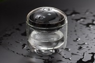
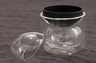
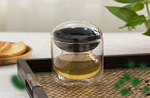
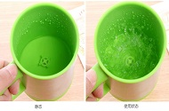
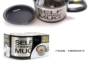
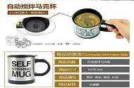

首页
简介
创意
表单
创意
该红点设计奖创意水杯，圆圆满满，双圆福禄。采用不烫手的双层结构，双圆的造型借用葫芦的外形语言， 晶莹剔透的杯体中包裹着黑色茶漏。喝茶时，玻璃杯盖可用于存放茶漏。非常方便，现代的设计。 适合用来送给爱喝茶的长辈或者朋友哦。
 
创意自动搅拌咖啡马克杯。只要装两节电池，咖啡放下去，水倒下去， 按下按钮即可自动搅拌。给爱喝咖啡女朋友送这个生日礼物准没错！ 作为中秋节礼物送给父母长辈也很适合哦。
  